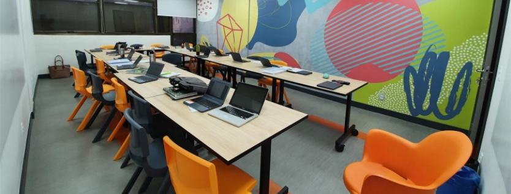

BEM VINDO À WASNIACK SUMMER SCHOOL!
Somos uma escola de tecnologia comprometida com a formação de profissionais preparados para os desafios do mercado digital. Oferecemos cursos atualizados, corpo docente especializado e infraestrutura moderna.
PONTOS FORTES:
- Infraestrutura moderna e laboratórios equipados
- Professores com experiência de mercado
- Parcerias com empresas de tecnologia
- Projetos práticos e preparação para certificações
- Alta empregabilidade dos nossos alunos
- Grade curricular atualizada com as demandas do mercado
- Ambiente de inovação e incentivo ao empreendedorismo
- Plataformas de aprendizagem online e híbrida
- Atendimento individualizado e mentoria acadêmica
- Infraestrutura de rede de alta velocidade e equipamentos de ponta
- Biblioteca digital e física com vasto acervo técnico
- Programas de intercâmbio e parcerias internacionais
- Suporte à carreira com orientação de currículos e simulação de entrevistas
PRINCIPAIS LOCAIS:

Sala de aula moderna com notebooks para atividades práticas.

Laboratório de informática equipado com computadores de alto desempenho.